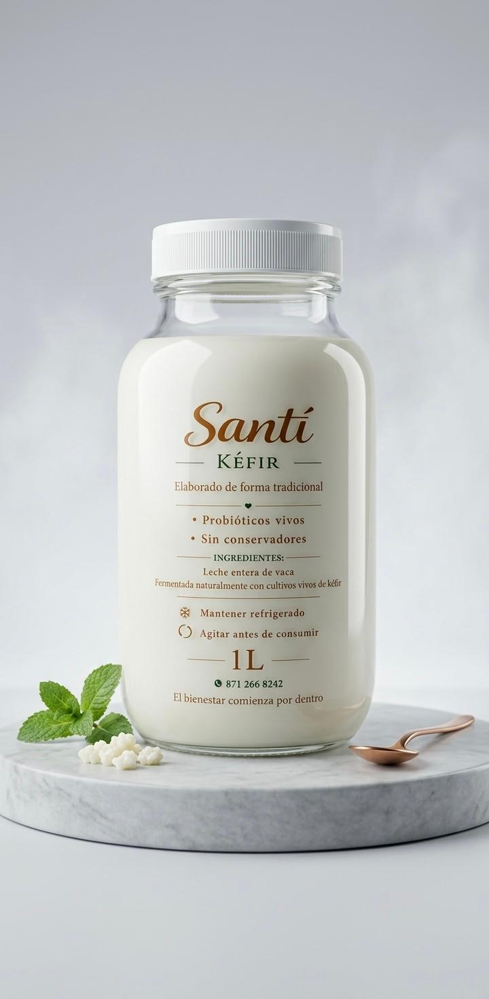

Restaurar tu microbiota es el paso más importante hacia una vida con energía. Nuestro kéfir es 100% artesanal, vivo y sin químicos.

Lo que un kéfir real hace por ti cada día
Elimina la pesadez y la inflamación de forma natural.
Fortalece tus defensas desde el intestino.
Mejora tu enfoque gracias al eje intestino-cerebro.
Limpia tu piel y aumenta tu energía diaria.
Análisis artesanal por cada 100ml
| Energía | 40 kcal |
| Proteína Bio-disponible | 3.4 g |
| Grasas Totales | 1.5 g |
| Carbohidratos | 3.8 g |
| Lactosa Residual | 2.1 g |
| Microorganismos | Vivos y Activos |
| Ingredientes | Leche entera y nódulos |